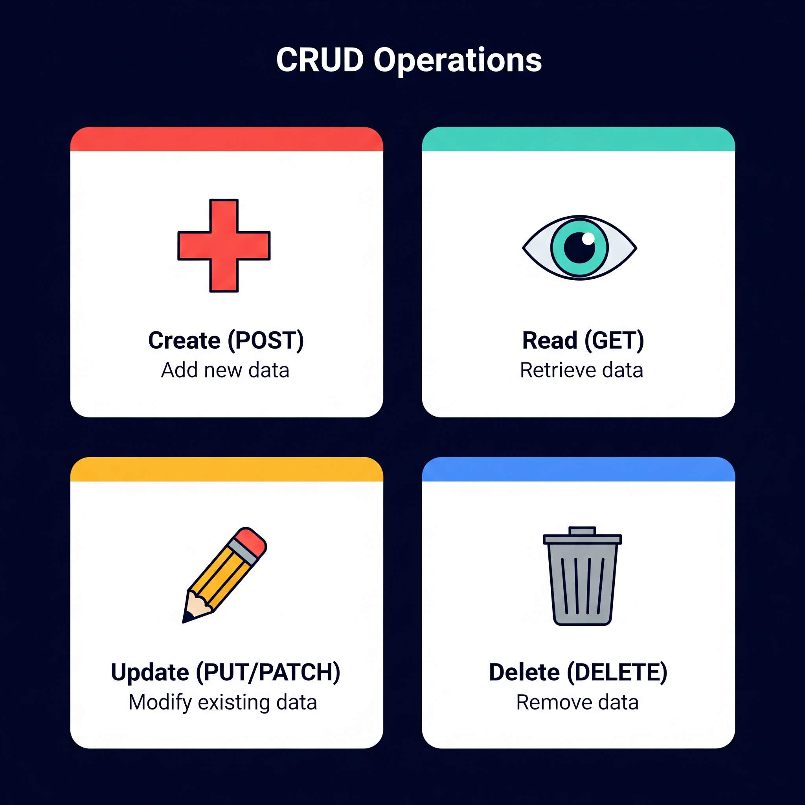

library(httr2) # Makes web requests
library(tibble) # Tidyverse data frames
library(dplyr) # Data manipulation
library(glue) # String constructionSession 2: CRUD, HTTP Methods & URL Anatomy
Day 1 — 9:00 AM to 10:00 AM
Recap from Session 1
In Session 1, we established the conceptual foundation:
- APIs are interfaces for software communication
- Data flows: Client → API → Server → Database (and back)
- Responses come as JSON (key-value pairs, nested structures)
- Status codes tell us if the request succeeded (200) or not (4xx, 5xx)
Now we’re going to put that knowledge into action — understanding how we interact with APIs and what those interactions look like.
Important🎯 The One Goal, Again
Make a request to an API, then format the response into something we can analyze.
Session 1 gave us the vocabulary. This session answers one question: how exactly do we write a request? (Answer: it’s a URL — and by the end of this hour you’ll be able to read one like a sentence.)
Part 1: The CRUD Framework
What type of client requests can we make? The CRUD framework organizes the four fundamental operations.
Look First

Now in Words
The image maps each CRUD operation to a visual icon: a plus sign for Create/POST (adding something new), an eye for Read/GET (looking at existing data), a pencil for Update/PUT-PATCH (editing something), and a trash can for Delete/DELETE (removing it).
| CRUD Operation | HTTP Method | Description |
|---|---|---|
| Create | POST |
Submit new data to the server |
| Read | GET |
Retrieve existing data from the server |
| Update | PUT / PATCH |
Modify existing data on the server |
| Delete | DELETE |
Remove a resource from the server |
NoteFor Data Science
In data science, Read (GET) is by far the most common operation. We’re typically pulling data, not writing to databases. As a data scientist, the eye (Read/GET) quadrant will cover the vast majority of your API work.
Tip🎯 Goal Check
Our workshop goal — make a request, format the response — lives almost entirely in the Read (GET) quadrant. Everything we do tomorrow is a GET.
———————
Visual Check — CRUD Operations.
(Multiple Choice): A social media app lets users edit their display name. Based on the image above, which CRUD operation and HTTP method does that action map to?
- Create — POST
- Read — GET
- Delete — DELETE
- Update — PUT/PATCH
- Read — POST
TipAnswer — Visual Check
d) Update — PUT/PATCH. Editing an existing record (changing a name that already exists) is an Update operation — the pencil icon. It is not Create (nothing new is being added) or Read (data is being changed, not just viewed).
———————
———————
Q1.
(Fill in the Blank): The HTTP method used to read (retrieve) data from a server is ________.
TipAnswer Q1
GET. Read = GET, and it is by far the most common operation in data science API work.
———————
———————
Q2.
(Multiple Choice): Which CRUD operation is most commonly used in data science when working with APIs?
- Read
- Create
- Update
- Delete
- All four equally
TipAnswer Q2
a) Read. Data scientists most commonly use GET requests to read (retrieve) data from external sources. We’re consumers of data, not typically writing to external databases.
———————
Part 2: GET Requests
A GET request is all about retrieving data. You’re asking the server: “Give me this information.”
Watch First
Step through the GET request at your own pace — Next, Back, or press Play.
Now in Words
The animation shows a GET request for the resource GET /users/42. The request originates at the Client and travels through the API to the Server and Database. Notice two things: first, the request carries only a path (/users/42) — no data payload. Second, the response brings data back to the client while nothing new is written to the database.
Here is the flow of a GET request:
- Client constructs a request for a resource.
- API receives and validates the client’s request.
- Server locates the requested data within the database.
- Client receives the requested data from the server.
NoteGET Characteristics
- The request parameters are encoded in the URL (visible in the address bar)
- GET requests are meant to be read-only — they don’t change data on the server
- They are idempotent — making the same request multiple times gives the same result
Tip🎯 Goal Check
“Make a request” in our goal sentence means, concretely: send a GET request — a URL asking for data.
———————
Visual Check — GET Request.
(Fill in the Blank): The animation shows GET /users/42. If you changed the request to GET /users/7, the only thing that changes is the ________ — the method, the flow, and everything else stay the same.
TipAnswer — Visual Check
The path (specifically, the number identifying which user you want — 42 becomes 7). The HTTP method is still GET and the flow (client → API → server → database → back) is identical.
———————
———————
Q3.
(Multiple Choice): Which of the following is an example of a task a data scientist would do with a GET request?
- Deleting old records from a company database
- Uploading a new profile photo
- Posting a comment on a forum
- Changing your account password
- Retrieving the top 10 most popular articles from the New York Times API
TipAnswer Q3
e) Retrieving articles is reading existing data — a GET. The other four options all change something on the server (delete, create, create, update).
———————
Part 3: POST Requests (Optional)
A POST request is about sending new data to the server. You’re telling the server: “Here’s something new — store it.”
Live decision, based on time: everything we do tomorrow is GET, so this part is a flex. Pick a tab — the quick version takes one minute; the full walkthrough about ten.
One idea is enough: POST sends new data to the server, and that data travels in the request body — unlike GET, which carries everything in the URL and only asks for data.
Think of it this way: GET is borrowing a book from the library. POST is donating a new book to it.
That’s all this workshop needs — if we skipped the details today, come back to the Full Walkthrough tab after the workshop.
Watch First
Step through the POST request — watch where the payload starts and where it ends up.
Now in Words
The animation shows a POST request sending POST /users with a JSON payload { "name": "Maya", "email": "maya@example.com" }. Compare this carefully to the GET animation: with GET, data flowed from the server to the client. With POST, data originates at the client and moves toward the server. The client is the source; the server is the destination.
Here is the flow of a POST request:
- Client sends new data within the request body.
- API receives and validates the client’s new data.
- Server creates a new record in the database.
- Client receives a confirmation for the new record.
ImportantGET vs. POST — Key Difference
- GET sends parameters in the URL — you’re asking for data.
- POST sends data in the request body — you’re submitting new data.
Think of it this way: GET is reading a book from the library. POST is donating a new book to the library.
———————
Visual Check — POST Request.
(Multiple Choice): In the POST animation, the JSON payload { "name": "Maya", ... } travels from the Client to the Server. Where does this data live in the request?
- In the URL query string, just like GET parameters.
- In the request body — unlike GET, which puts parameters in the URL.
- In a separate file attachment.
- In the status code.
- In the database before the request is even sent.
TipAnswer — Visual Check
b) POST sends data in the request body — a separate payload attached to the request. GET requests have no body; all their parameters are encoded directly in the URL (visible in the address bar).
———————
———————
Q4.
(Multiple Choice): Which of the following data science tasks would most likely require a POST request instead of a GET request?
- Retrieving the current temperature for a city.
- Getting a list of your public repositories from the GitHub API.
- Submitting a new tweet through the X (formerly Twitter) API.
- Looking up the coordinates for a specific address.
- Downloading yesterday’s stock prices.
TipAnswer Q4
c) Submitting a new tweet involves creating a new resource on the server, which is the primary purpose of a POST request. The other options involve only retrieving existing data.
———————
———————
Q5.
(Multiple Choice — Callback to the restaurant analogy): If a GET request is like reading the menu and placing an order, what would a POST request be most analogous to?
- Submitting a new recipe for the kitchen to keep in its collection
- Asking the waiter to repeat the specials
- Paying the bill with exact change
- Ordering the same dish twice
- Reading the menu a second time
TipAnswer Q5
a) A POST adds something new to the restaurant’s collection — like submitting a new recipe. Options b, d, and e are all just reading/asking again (GET-like), and paying the bill doesn’t add new data to the kitchen.
———————
Tip🎯 Goal Check
POST is good to recognize, but our goal only needs GET. Whichever tab we took, nothing tomorrow depends on POST.
Part 4: URL Anatomy
So how do we actually construct a request? A request is defined by a URL, which contains both:
- The endpoint (base address of the API) — the stable part
- The query string (key-value pairs that customize the request) — the dynamic part
Watch First
Step through the URL piece by piece — each click highlights the next component.
Now in Words
The animation shows the Client (left) and API Server (right) with the URL being broken down between them. The full URL carries everything the server needs — protocol, host, endpoint path, and each query parameter — in a single string. Pay attention to where the endpoint ends and where the query string begins.
Breaking Down a URL
Here is a real URL we will use tomorrow — it asks the free Open-Meteo weather API for the current temperature in San Luis Obispo. Click Next to light up one piece at a time:
https://api.open-meteo.com/v1/forecast?latitude=35.28&longitude=-120.66¤t=temperature_2m&temperature_unit=fahrenheit
Protocol
Base URL
Endpoint
Separators
? &
Key-value pairs
And the same anatomy, condensed to five pieces:
| Component | Value | Purpose | |
|---|---|---|---|
| 🟣 | Protocol | https:// |
How — secure communication |
| 🔵 | Base URL | api.open-meteo.com |
Who — the API server |
| 🟠 | Endpoint | /v1/forecast |
What resource — the stable part |
| 🔴 | Separators | ? then & |
? starts the customization; & chains pairs |
| 🟢 | Key-value pairs | latitude=35.28, … |
The details — where, what data, which units |
NoteKey Vocabulary
- An endpoint is the specific URL where an API resource can be accessed. It’s the stable part of the URL that doesn’t change from one request to the next.
- A query string customizes the request using key-value pairs. It always starts with
?and pairs are separated by&.
NoteWhat About API Keys?
Many APIs require one extra query parameter: an API key (e.g., &appid=YOUR_KEY) — an ID that says who is making the request. The Open-Meteo API we use in this workshop is free and does not need a key, so our URLs stay short and simple. Just know the concept exists — you’ll see it in other APIs’ documentation.
Tip🎯 Goal Check
This is the “make a request” half of our goal, fully unpacked: a request = endpoint + query string. Tomorrow we paste this exact URL into a browser and into R.
———————
Visual Check — URL Anatomy.
(Fill in the Blanks): One character each.
- The character that marks the boundary between the endpoint and the query string is ____.
- The character that separates one key-value pair from the next is ____.
TipAnswer — Visual Check
- The
?— everything before it is the stable address; everything after it is customization. - The
&— it chains multiple key-value pairs together.
———————
———————
Q6.
(Short Answer): In the URL https://api.spotify.com/v1/search?q=Daft+Punk&type=artist, identify the endpoint and the two key-value pairs that make up the query string.
TipAnswer Q6
- Endpoint:
https://api.spotify.com/v1/search - Key-Value Pairs:
q=Daft+Punkandtype=artist
———————
———————
Q7.
(Multiple Choice — Callback to Session 1): When your R script makes a GET request to a weather API, which statement is correct?
- Your script sends JSON and receives a URL.
- Your script sends JSON and receives JSON.
- Your script sends a URL and receives a URL.
- Your script sends a URL and receives JSON.
- Your script sends a data frame and receives a plot.
TipAnswer Q7
d) The request itself is a carefully constructed URL containing the endpoint and query parameters. The API’s response comes back as JSON containing the data, metadata, and status code.
———————
Session 2 Recap
In this session, we learned how requests are actually written:
- CRUD Framework — Create (POST), Read (GET), Update (PUT), Delete (DELETE)
- GET Requests — retrieve data, parameters in the URL
- POST Requests (optional) — send new data in the request body
- URL Anatomy — protocol, base URL, endpoint, query string, parameters
🎯 Goal progress: we can now read and write the request half of our goal sentence. Up next in Session 3 (tomorrow): we make it real — we’ll send that exact Open-Meteo URL from a browser and from R, get live weather back, and format the response into a data frame. No API key needed.
During the Break
Before we wrap up Day 1:
- Questions? Come up and ask — Meg and I will be here for the whole break.
- Did you finish? Check yourself:
- If you finished everything, try writing (on paper!) what you think a URL asking Open-Meteo for the temperature in your hometown would look like. You only need to change two numbers.
Optional — After the Workshop: Going Deeper
WarningRead This Later, Not Today
The three sections below are optional enrichment — we will not cover them live. They preview the R code you’ll see in Sessions 3–4 and go deeper into error handling. If today already felt like a lot, skip this entirely; nothing tomorrow depends on it.
Optional A: Under the Hood — What Happens When You Make a Request
Let’s connect everything together:
- You construct a URL from a base URL (endpoint) + query string (parameters).
- Your client sends a GET request using this URL to the API.
- The API relays this request to the server.
- The server processes the request, queries the database, and sends a response.
- The response includes a status code and the requested data (formatted as JSON).
- Your R code parses the JSON into a data structure you can work with.
ImportantCommon Misconception
We are not sending JSON when we make a GET request. We’re sending a URL with parameters. JSON is what comes back to us in the response.
Optional B: Making Requests to a Dummy Server in R
These blocks show real requests to a practice server. You can run them any time after the workshop.
A simple GET request to a public test API:
# Step 1: Define the URL
test_url <- "https://jsonplaceholder.typicode.com/users/1"
# Step 2: Create a request object
req <- request(test_url)
# Step 3: Perform the request
response <- req_perform(req)
# Step 4: Check the status code
resp_status(response)
# Step 5: Check the content type
resp_content_type(response)# Step 6: Parse the JSON response
result <- resp_body_json(response)
# Step 7: Inspect the structure
str(result)# Step 8: Convert to a data frame
user_df <- as.data.frame(result)
print(user_df)A GET request with query parameters:
# Get posts by a specific user
posts_url <- "https://jsonplaceholder.typicode.com/posts"
posts_url_query <- glue("{posts_url}?userId=1")
req <- request(posts_url_query)
response <- req_perform(req)
if (resp_status(response) == 200) {
posts <- resp_body_json(response)
cat("Number of posts retrieved:", length(posts), "\n")
}And a POST request — sending data to the server:
# Step 1: Define the endpoint
post_url <- "https://jsonplaceholder.typicode.com/posts"
# Step 2: Create the request with a body
req <- request(post_url) |>
req_method("POST") |>
req_headers("Content-Type" = "application/json") |>
req_body_json(list(
title = "My API Workshop Post",
body = "Learning about APIs is fun!",
userId = 1
))
# Step 3: Perform the request
response <- req_perform(req)
# Step 4: Check the status code (201 = Created)
cat("Status:", resp_status(response), "\n")
# Step 5: See the response
result <- resp_body_json(response)
print(result)
NoteStatus Code 201
Notice we got a 201 Created instead of 200 OK. This is the standard success code for POST requests — it means the server successfully created the new resource.
Optional C: Handling Errors with Status Codes
# Try requesting a resource that doesn't exist
bad_url <- "https://jsonplaceholder.typicode.com/users/999999"
req <- request(bad_url)
response <- req_perform(req)
# Check the status
cat("Status code:", resp_status(response), "\n")# Build a robust request handler
safe_get <- function(url) {
req <- request(url)
response <- req_perform(req)
status <- resp_status(response)
if (status == 200) {
cat("Success! Status:", status, "\n")
return(resp_body_json(response))
} else if (status >= 400 & status < 500) {
cat("Client error! Status:", status, "- Check your URL or parameters.\n")
return(NULL)
} else if (status >= 500) {
cat("Server error! Status:", status, "- The server has an issue.\n")
return(NULL)
}
}
# Test it
result <- safe_get("https://jsonplaceholder.typicode.com/users/1")———————
Bonus Q.
(Open-Ended): In the GET request to the dummy server, we sent a URL and received JSON. In the POST request, we sent JSON in the request body. How does this change what we learned about GET vs. POST?
TipAnswer — Bonus Q
This reinforces the key difference: GET requests encode parameters in the URL and receive JSON back. POST requests send data in the request body (often as JSON) and receive a confirmation (also JSON) back. So POST actually involves JSON going both directions, while GET only involves JSON coming back.